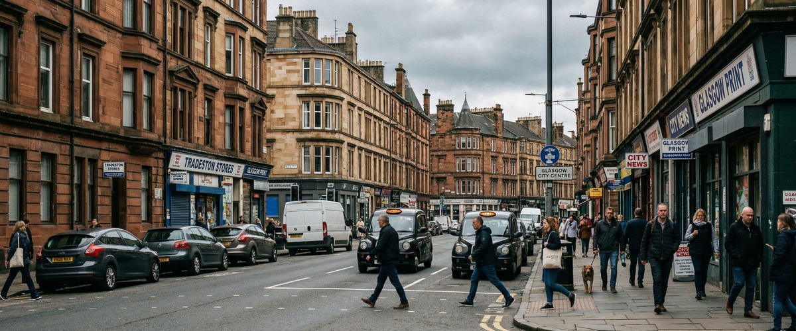
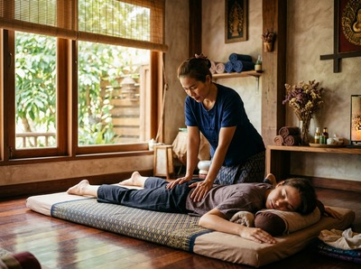
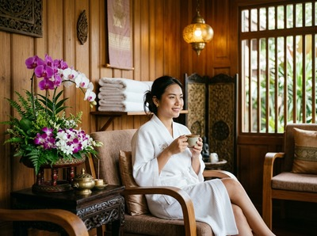

Tradeston sits on the south bank of the River Clyde, directly opposite Glasgow Central Station and just minutes from the city centre.

Once a busy dockland and industrial district, the area has evolved into a mixed hub of commercial units, creative businesses, and a growing residential community drawn by the riverside setting and easy access to the city. Anyone searching for thai massage in Tradeston will find that Serendipity Massage Therapy & Wellness, on Hope Street in Glasgow City Centre, is one of the closest professional options available.
Tradeston sits directly across the Clyde from the city centre, making it one of the easiest areas in Glasgow for reaching Serendipity. The studio is at Central Chambers on Hope Street.

Bridge Street Subway Station is at the heart of Tradeston and connects straight to the inner city. For anyone working along Morrison Street or Bedford Street, or living in the newer riverside blocks, the studio is genuinely close.
Whether you carry tension from a desk, physical work, or the general grind of a long week, a session at Serendipity is designed to address it properly. You can book your session online in advance, or call the studio directly if you prefer to discuss what you need first.
Serendipity Massage Therapy & Wellness offers a full range of treatments for clients travelling in from Tradeston and across the south side of Glasgow.
Bridge Street Subway Station is the natural starting point for most Tradeston residents and workers. Take the subway one stop north to St Enoch Station. That puts you on Argyle Street, a short walk from Hope Street and the studio at Central Chambers.
The journey takes only a few minutes. The subway runs every five minutes through the day, so it is easy to time around a lunch break or after work.
Several bus routes connect Tradeston with the city centre, including services along Commerce Street and Bedford Street toward the Broomielaw. If you prefer to walk, the Tradeston Bridge brings you onto the north bank near Broomielaw in minutes. From there, Hope Street is a short walk inland.
The studio address is Floor 1, Suite 50, Central Chambers, 93 Hope Street, Glasgow G2 6LD. Once you have your route sorted, booking your appointment takes only a moment online.

Serendipity is not a sole trader or a chain. It is a professional team practice, and every therapist is trained to a consistent standard using techniques developed by head therapist Jariya Malone.
That means your session is delivered with the same care and skill whether it is your first visit or your tenth. Clients from across Glasgow's south side — including Tradeston, Kingston, and the Gorbals — return regularly because the quality holds.
Tradeston takes its name from "Trades Town." It was built around Glasgow's dockland trade, with warehouses and wharves lining the Clyde.
Today it sits at the centre of a wider riverside revival. Industrial heritage blends with a growing mix of homes and creative businesses. You can read more at Tradeston on Wikipedia.
Tradeston is directly across the River Clyde from Glasgow City Centre. That makes it one of the closest south-side areas to the studio. Serendipity Massage Therapy & Wellness is at Central Chambers on Hope Street, G2 6LD. Depending on where you start in Tradeston, you can reach the studio in around ten to fifteen minutes by subway or on foot via the Tradeston Bridge.
The Glasgow Subway is the quickest option. Take it from Bridge Street Station one stop north to St Enoch. The studio on Hope Street is a short walk from there. You can also cross the Clyde on foot via the Tradeston footbridge. That brings you onto the Broomielaw, and Hope Street is just a few minutes further. Several bus routes also run from Commerce Street and Bedford Street into the city centre.
Same-day availability depends on the schedule, so it is always worth checking. The easiest way is to use the online booking page, which shows live availability. You can also call the studio on 0141 673 6630 to check and book directly with the team.
Traditional Thai Massage works well for neck pain, shoulder tension, and postural strain from screen work. It uses acupressure and assisted stretching to release tight muscles and restore range of motion. That makes it a strong choice for office workers and desk-based roles. Thai Oil Massage is also a good option if you prefer a more fluid, flowing treatment.
Please check the Serendipity website or call 0141 673 6630 for current opening hours, as these can vary by day and season. The studio is on Hope Street in Glasgow City Centre. It is easy to visit before work, at lunch, or after finishing for the day.